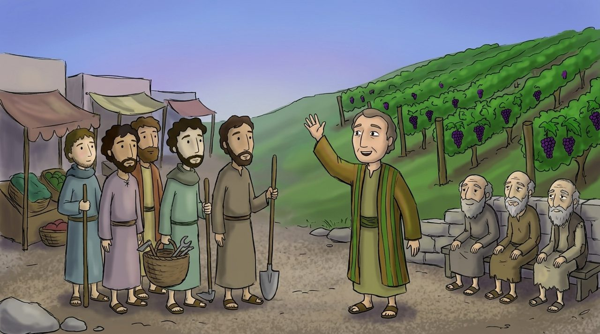

1 · Matta 20:1–7
Beş dəfə çağırış
Üzüm yığımı vaxtı yağış yağmazdan əvvəl tələsik yığmaq lazım idi, buna görə işçi çatışmırdı. Sahib səhər saat 6-da, 9-da, 12-də, 3-də və gün batmazdan bir saat əvvəl, 5-də də bazara çıxır.
Saat 5-də dayananlar “Heç kim bizi muzdla işə götürmədi” dedilər. Yəqin ki, yaşlı və ya zəif olduqları üçün seçilməyən insanlar idi. Sahib onları da çağırdı.
Dərindən baxaq · Axtarıb gedən sahib
Adətən işçi sahibi axtarır, amma bu sahib beş dəfə özü axtarmağa çıxır. Bu, 9-cu fəsildəki Çoban və 18-ci fəsildəki itmiş qoyunu axtaran çoban kimi Allahın surətidir.